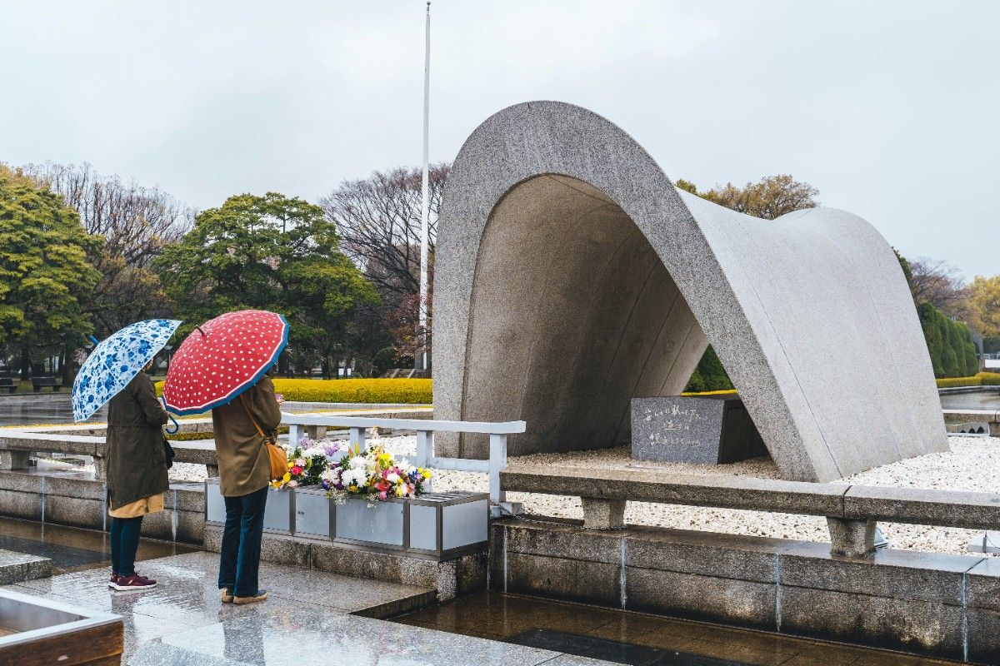
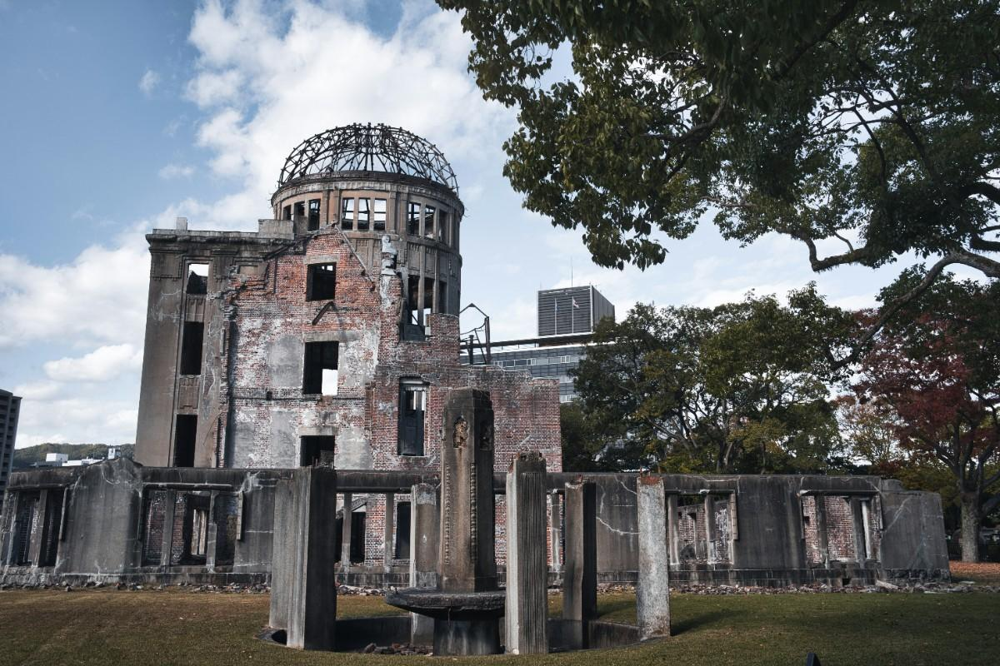
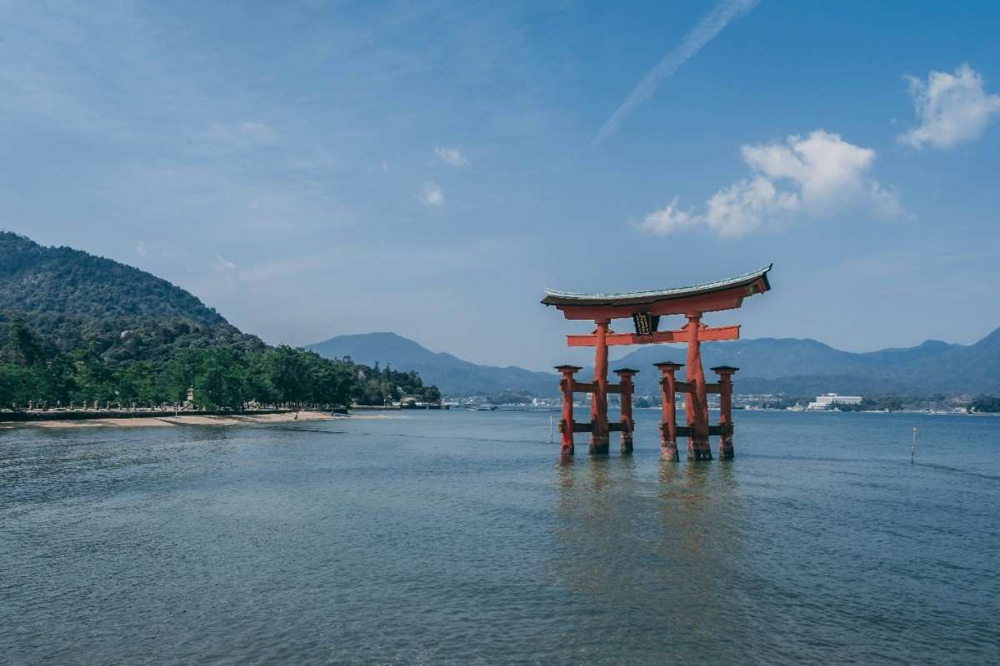

A city of resilience, history, and hope.
Hiroshima is a city that carries deep historical significance while also representing resilience and progress. Today, it is a modern and vibrant city with clean streets, active neighborhoods, and a strong sense of peace. Landmarks like the Hiroshima Peace Memorial remind visitors of the past, while the city itself shows how much it has grown and rebuilt. It’s a place where history and modern life coexist in a meaningful way.



Reflective, peaceful, meaningful
Hiroshima offers more than just sightseeing — it offers perspective. It’s ideal for those who want to experience a city with both emotional depth and modern comfort